k-Day 097｜撿垃圾
早上突然聞到一陣草味，聽到帳篷周圍傳來陣陣咩咩叫聲，拉開帳篷和外面的主人對視，點了點頭，拉上拉鍊繼續睡覺。
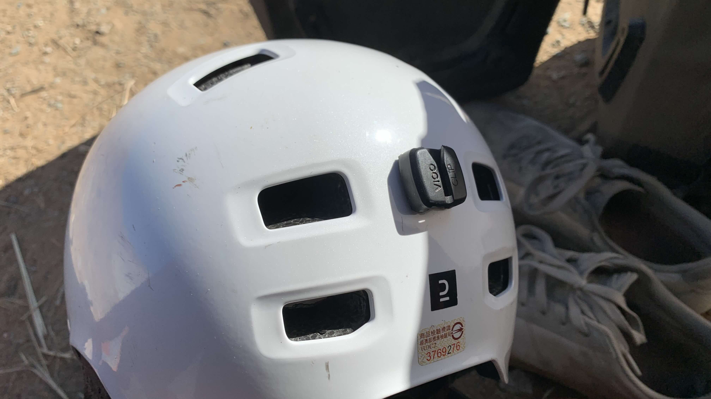
收拾好裝備，準備戴上安全帽，燈呢？不見了？反覆回顧昨天的行程，已經想不起掉在哪裡。
一路上在路邊看到各種被主人遺棄在道路、草叢中的物件，運動鞋、外套、裂掉的手機、斷頭的充電線、扳手、瓦斯罐等等，我總是在心中暗自嘲笑咒罵著，「是玩遊戲可以撿裝備嗎？這些沒公德心的傢伙。」
此刻我已正式成為其中一員，丟了一包垃圾，掉了一個呼吸燈。一路上不斷回想，怎麼樣都無法接受。
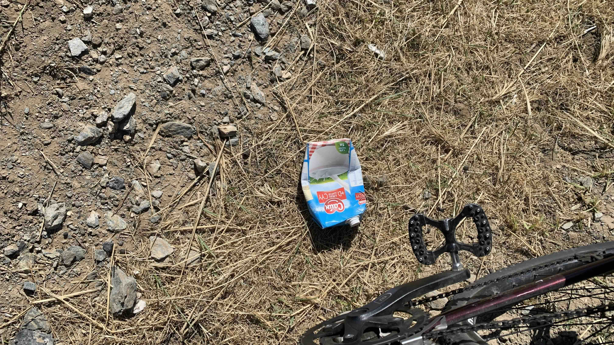
眼角餘光掃到路邊的垃圾，靈機一動：「我不是一直都想著未來該如何報答在蒙古接受的善意嗎？何需等待未來呢？今天就從簡垃圾開始吧！」
當然還是以不影響安全為前提，長下坡路段、車流過多、周遭有明顯碎玻璃、過陡的斜坡、明顯是裝了尿液，或者無法看清內容物的瓶子不撿，目標是在進城前把垃圾袋裝滿。
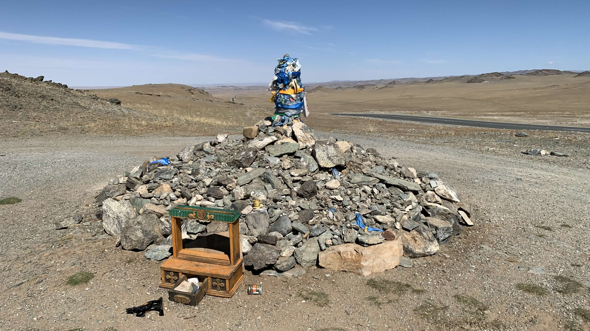
上坡時發現一座敖包，前方被放置了不少私人物件，分不出是不是垃圾。
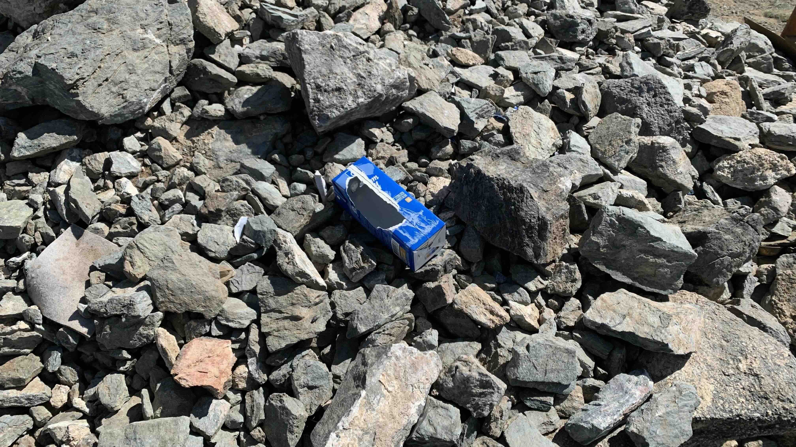
繞道旁邊，果然在石堆上發現包裝紙盒。
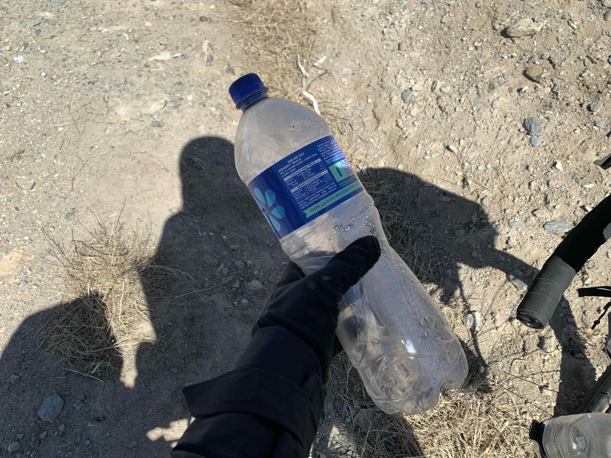
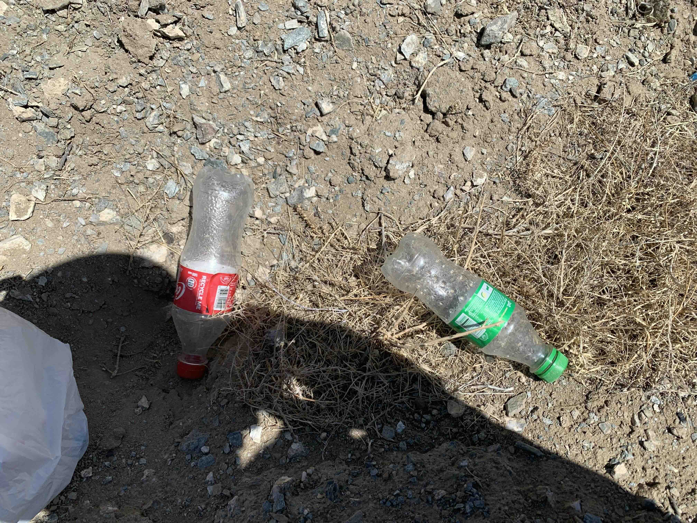
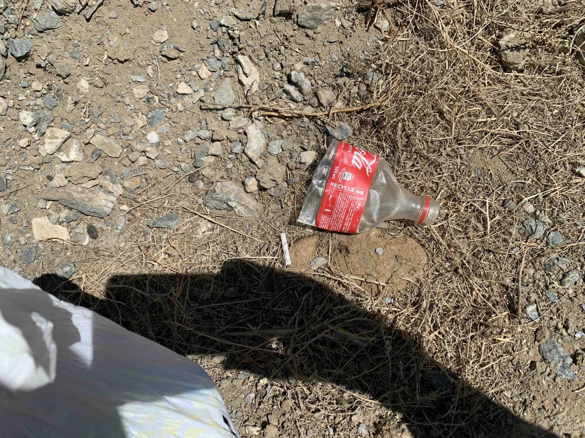
垃圾袋太小，裝了幾個瓶子就滿了。
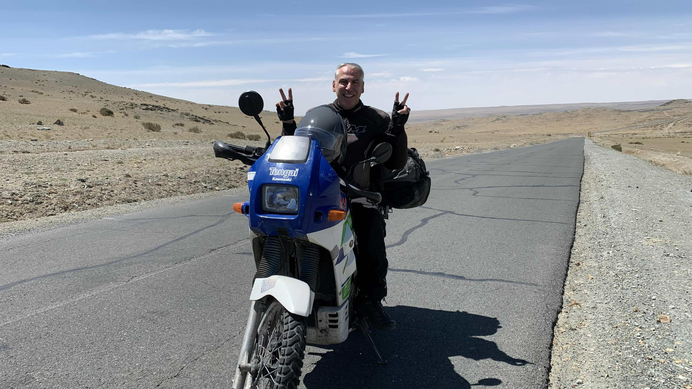
進城的路上遇到重機騎士，遠遠就朝我招手。脫下安全帽後問我要騎到哪裡？
「法國。」我說。
這位大叔去過好多地方，其中也包括台灣。大概是有個朋友突然問他要不要去做某個工作，他心想：「好啊，有什麼不好。」就到了台北工作。
在他說話的時候，我留意到他的耳朵也塞了耳塞。
大叔很興奮地分享各地路況：
「我跟你說，你往前走一路上都是沙漠，但是等你出境到了俄羅斯，那公路兩旁的景色真是太完美了。你不會去俄羅斯？」
「我是從義大利騎過來的，本來要到中國，再騎著我的Kawasaki到日本的博物館，你看這輛車叫「天涯」！但他們說我的車要上吉普車才能到中國，我就決定騎到烏蘭巴托。我才不想讓我的車上吉普車。」
「你們這種人不會只騎到法國，我見過太多了，你以後一定會想那我騎美洲吧！等你到了美洲記得我說的，從阿拉斯加騎到巴塔哥尼亞就好。沒必要騎到最南邊，真的，那邊風大，什麼風景也沒有，我騎著機車都很辛苦，在路上看到好多跟你一樣騎著自行車的，他們都躲在路邊，哪裡也去不了！」
「那不就是我嗎？我上禮拜好幾次都因為風太大躲在路邊！」知道也有很多人和我一樣後，有種放心後的輕鬆雀躍。
「是嗎？我就說吧，你一定會到美洲，到時候記得不需要騎到最南邊，有人問你你就說你騎到巴塔哥尼亞就好了。記得我說的！」
謝了大叔，我不覺得自己有這麼好興致走這條路線。
這條下坡路實在有點狹窄，路過的卡車並沒有按我們喇叭，但是看著大叔直接把車停在路上還是有些不妥，兩人說了再見後，大叔朝著順風的方向離開。
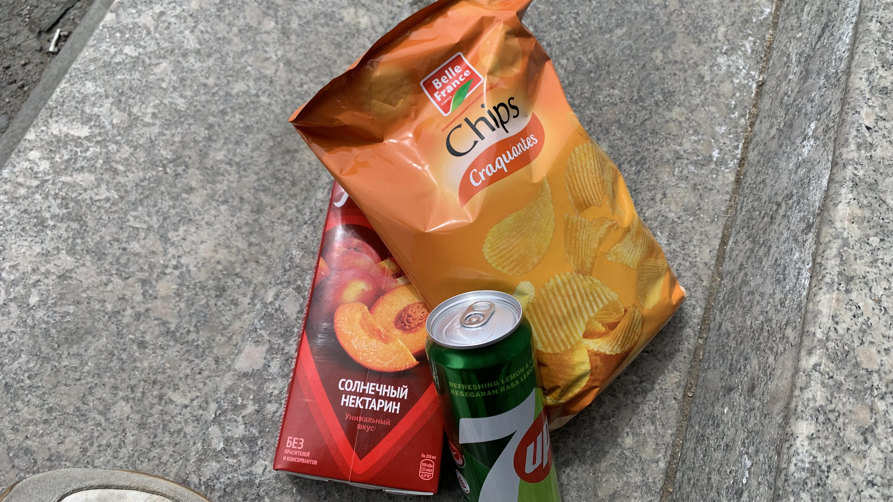
進城時出現一條小溪，河床上長了這樣的樹。他們倒臥的姿勢跟蒙古人和我聊天時斜躺在床上的姿勢很像，是氛圍相當愜意的樹。
過了橋就是超大間的諾敏超市，買了桃子汁、汽水、薯片，蹲在門口當午餐。
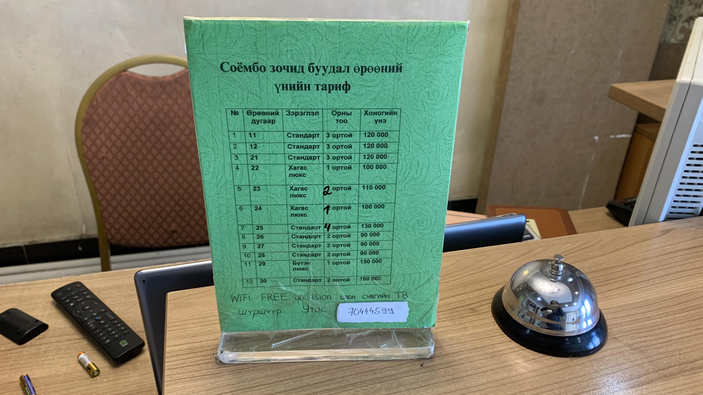
找到一間飯店，是錢包不能接受，但是在蒙古還在預算內的價位。櫃檯不收信用卡，說機器沒電了。一次把十萬紙鈔都交出去。包裡的現金已所剩不多。
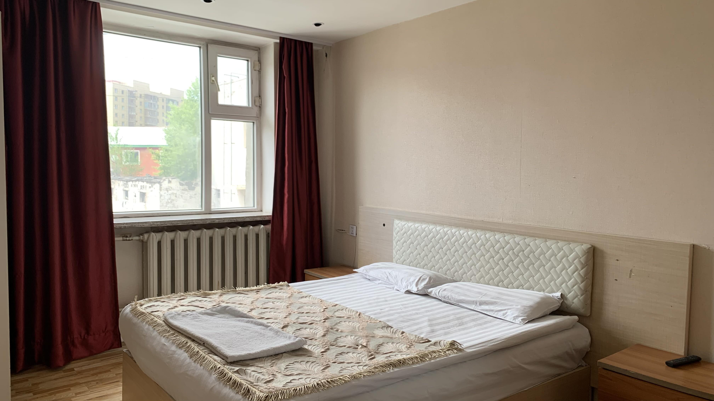
付錢後讓我把二十三號停到室內像是倉庫的地方。帶著我上樓，介紹房間裡的物品。順便補一句：「洗澡要到外面。裡面沒有熱水，你會很冷。」
付的是套房的錢，獲得的卻是共用衛浴的品質。
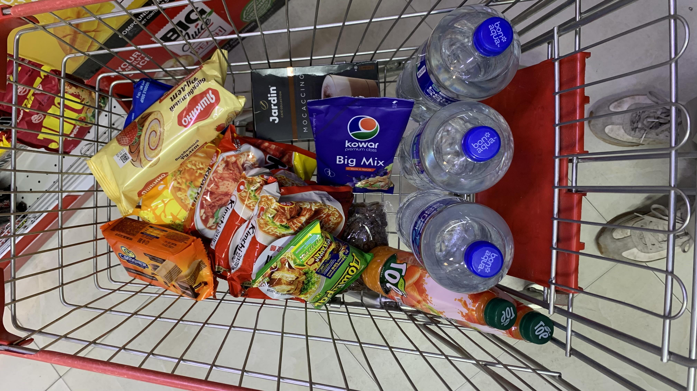
洗完澡出門採買，之後的路線城鎮距離會越來越遠。買了一堆泡麵，還抓了草莓蛋糕、巧克力餅乾和一大袋葡萄乾綜合堅果。身體已經到了需要糖分的地步了。
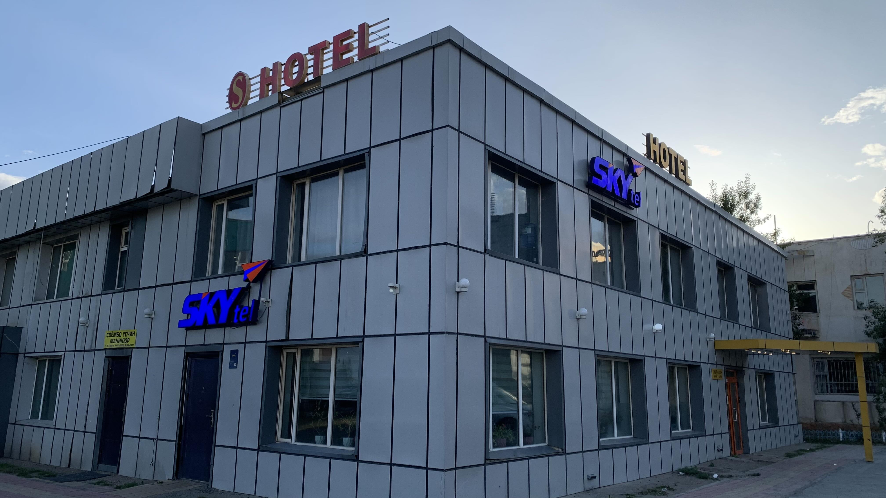
這是今天住的飯店，在此地已算平價。這裡感覺上是普通的城市，進城時沒感覺到特殊的風格。
今日花費： 汽水＋桃子汁＋薯片 24500、西行糧食 65290、住宿 100000元